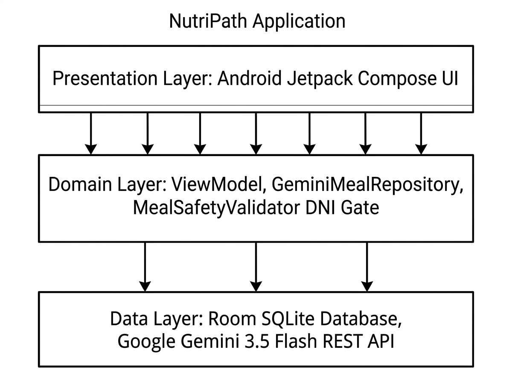
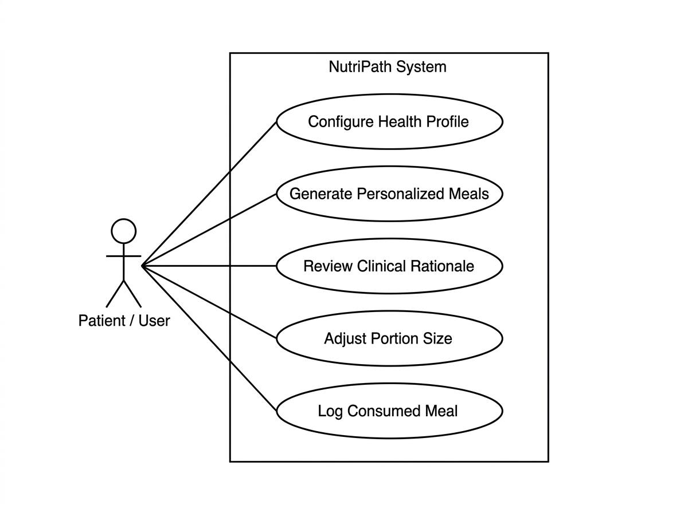
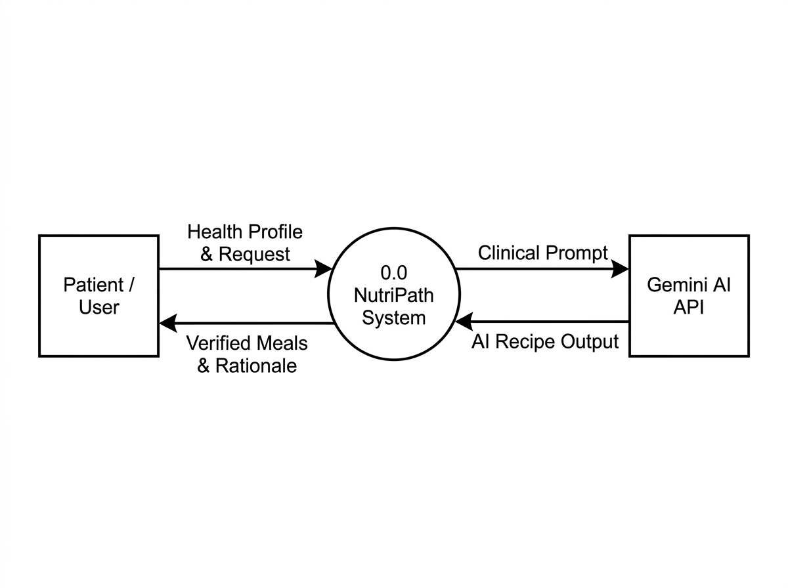
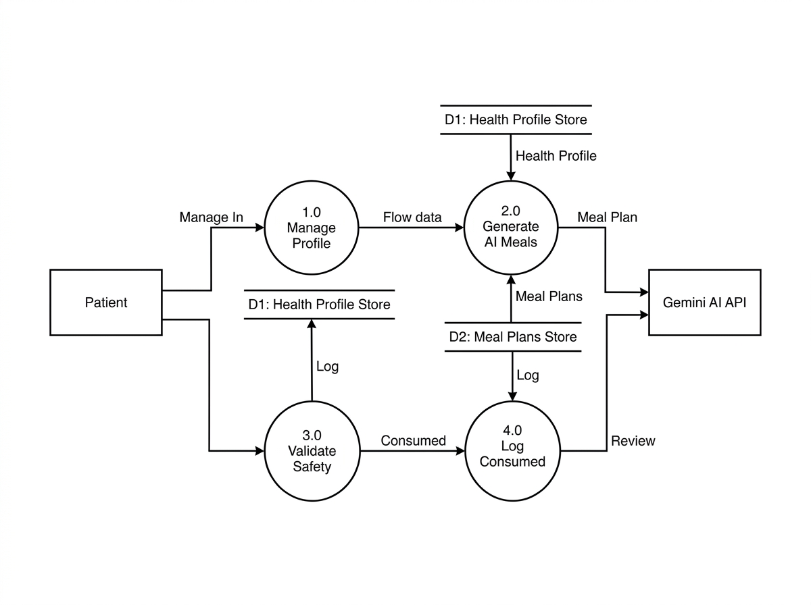

NutriPath
Personalized Meal Plan Generator Leveraging Large Language Models & Deterministic Clinical Guardrails
Vishnu V Ram
Roll No: 53
Guide
Smt. Christina Thankam Sajan
Assistant Professor
Introduction
- Chronic Disease Dietary Adherence Challenge: Patients with Type 2 Diabetes, Hypertension, and CKD struggle to follow monotonous, repetitive diet sheets.
- Generic Apps Lack Clinical Awareness: Consumer apps focus on calorie counting and fail to screen for prescription drug-nutrient interactions (DNI).
- Generative LLM Opportunity: Large Language Models (LLMs) can craft diverse, culturally appealing recipes that eliminate dietary monotony.
- Explainable Clinical Rationale: Providing patient-tailored physiological explanations for meal choices significantly boosts behavioral adherence.
- Zero-Trust Safety Verification: NutriPath pairs Gemini LLM generation with deterministic rule-based clinical safety gates to guarantee safe medical nutrition therapy.
Problem Statement
"Current nutrition apps cannot guarantee safe, clinically validated meal plans for individuals with chronic medical conditions, nor do they provide motivational clinical rationales to sustain dietary adherence; there is a vital need for a hybrid generative and deterministic medical nutrition platform."
Project Overview
Problem
Generic diet sheets and unconstrained AI tools either cause severe dietary monotony or hallucinate unsafe ingredients and nutrient numbers, ignoring patient medications and organ limits.
Solution
NutriPath leverages Google Gemini 3.5 Flash for personalized recipe synthesis and clinical adherence rationales, backed by an on-device deterministic safety gate and offline fallback catalog.
Why It Matters
Empowers chronic disease patients with appetizing, diverse food choices while ensuring zero-trust medical safety, transparent ADIME clinical records, and higher long-term dietary compliance.
Literature Survey
| Sl. | Paper / Framework | Methodology | Key Merits | Limitation / Gap |
|---|---|---|---|---|
| 1 | Personalized Meal Plan Generator Leveraging LLMs (IEEE JBHI 2024) | Prompting LLMs with patient biomarkers, conditions, and targets for tailored meals | Demonstrates that tailored clinical rationales dramatically boost dietary adherence | Pure generative LLMs risk nutritional hallucinations without deterministic verification |
| 2 | NutriOrion (arXiv:2602.18650, 2026) | Hard drug-nutrient interaction (DNI) constraints; automated ADIME charting | Eliminates the "Healthy Food Trap" (e.g. Warfarin + high Vitamin K greens) | Originally formulated as a server-side framework; lacked offline mobile implementation |
| 3 | HealthGenie (arXiv:2504.14594, 2025) | Interactive user ingredient exclusion with clinical substitution | Enables circular patient adaptation and food aversion management | Lacked generative natural language meal prompting and offline-first mobile sync |
Gap Identified
- Absence of Pharmacological DNI Screening: Commercial nutrition apps completely ignore drug-nutrient contraindications (e.g. Warfarin, Statins, ACE inhibitors).
- Nutritional Hallucination in Pure AI: Generative chatbots invent inaccurate macro/micronutrient numbers and cannot be trusted for renal or cardiac patients.
- Dietary Monotony & High Drop-Out Rates: Static hospital meal sheets fail to offer personalized variety, leading over 70% of patients to abandon their diets.
- Lack of Explanatory Adherence Rationales: Existing solutions tell patients what to restrict without explaining the physiological benefits to foster compliance.
- Complete Vulnerability to Network Failures: Most AI tools fail completely when offline, stranding users during grocery shopping or cooking.
- NutriPath's Resolution: A native Android app combining Gemini 3.5 Flash LLM with on-device deterministic safety gates, adherence rationales, and zero-downtime offline fallback.
Proposed Solution
- Automated Clinical Health Profile Ingestion: Automatically feeds user conditions (T2D, Hypertension, CKD), medications, and calculated targets into prompts.
- Gemini 3.5 Flash LLM Generation: Generates diverse, culturally appealing recipes with exact ingredient quantities and preparation steps.
- Clinical Adherence Rationale: Delivers an evidence-based metabolic explanation and behavioral tips for each meal to motivate patient compliance.
- Dual-Mode Engine Switcher: Allows users to toggle between Gemini LLM mode and the Deterministic Clinical Rules catalog, with custom craving inputs.
- Zero-Trust Deterministic Safety Gate: Evaluates recipes with 11 independent rules against FDA DNI tables and micronutrient caps.
- Live Portion Adjustment Dialog: Enables instant serving scaling (0.5x, 1.0x, 1.5x, 2.0x, slider) with live dynamic macro recalculation.
- Automated ADIME Clinical Charting: Generates standardized medical documentation conforming to the Nutrition Care Process (NCP).
- Zero-Downtime Deterministic Fallback: Automatically serves pre-validated clinical catalog meals if offline or if the API key is unset.
System Architecture

Architecture Overview
NutriPath is engineered as a 3-tier native Android application adopting Clean Architecture and MVVM patterns. The user interface is developed in Jetpack Compose and observes reactive Kotlin Coroutine StateFlow streams emitted by NutriPathViewModel.
The domain layer orchestrates meal generation through GeminiMealRepository which communicates with the Google Gemini 3.5 Flash REST API. Generative outputs are intercepted by the independent MealSafetyValidator before persisting to the local Room SQLite Database. In offline environments, requests route seamlessly to the deterministic clinical catalog.
Architecture Components: Client & Core
1. Client / Presentation Layer
- Jetpack Compose UI: Modern, declarative, reactive Material 3 screens.
- Onboarding Screen: Captures biometrics, chronic conditions, and active medications.
- Meal Generator Screen: Interactive engine mode switcher, craving input bar, and recipe cards.
- AdjustPortionDialog: Preset chips & slider with live macro recalculation.
2. Application / Core Domain Layer
- NutriPathViewModel: Manages state flows, date navigation, and daily budget accumulation.
- GeminiMealRepository: Synthesizes clinical prompts and parses structured JSON.
- MealSafetyValidator: Zero-trust gate evaluating DNI rules and nutrient ceilings.
- Clinical Fallback Engine: Ensures zero-downtime offline recommendation delivery.
Architecture Components: Data & Cloud
3. Local Persistence Layer (Room DB)
- HealthProfileEntity: Stores age, BMI, chronic diseases, active medications, and calculated targets.
- MealPlanEntity: Tracks scheduled, planned, and consumed meals with servings and exact macros.
- IndianFoodEntity: Bundled reference food composition database based on ICMR-NIN & Anuvaad.
- Offline Capability: Guarantees 100% full local functionality without internet access.
4. Cloud AI & Sync Layer
- Gemini 3.5 Flash REST API: High-speed cloud LLM generating creative recipes & adherence rationales.
- Retrofit & OkHttp Client: Configured with 60s timeouts, logging interceptors, and Moshi converters.
- AI Studio Secrets Management: Injects API keys securely at build-time via
BuildConfig. - Firebase Sync (Optional): Multi-device profile and meal plan cloud synchronization.
Module Description (1 - 4)
- 1. Health Profile & Biomarker Module: Collects clinical parameters, chronic disease checkboxes (T2D, Hypertension, Thyroid, Arthritis, CKD), active medications (Warfarin, Statins, Lisinopril), and computes Mifflin-St Jeor daily caloric and macro limits.
- 2. Gemini LLM Meal Generation Module: Asynchronously dispatches structured prompts containing the patient's full medical profile to Google Gemini 3.5 Flash, returning structured JSON recipes tailored to the requested meal type.
- 3. Clinical Adherence Rationale Module: Displays an evidence-based card explaining how the recipe's nutrients (e.g. soluble fiber, potassium bounds) manage the patient's conditions, paired with practical culinary behavioral tips.
- 4. Zero-Trust Clinical Safety Validator Module: Executes 11 independent deterministic safety checks against FDA DailyMed DNI tables and disease nutrient caps, classifying meals as Approved, Modified, Warning, or Rejected.
Module Description (5 - 8)
- 5. Circular Ingredient Adaptation Module: Implements the HealthGenie protocol allowing users to tap '×' on disliked ingredient chips, triggering dynamic recipe adaptation with safe substitutes.
- 6. Dynamic Portion Scaling Module: Powers the
AdjustPortionDialogwith preset chips (0.5x, 1.0x, 1.5x, 2.0x) and continuous slider, recalculating calories and macros in real-time. - 7. ADIME Clinical Documentation Module: Generates standardized medical records (Assessment, Diagnosis, Intervention, Monitoring, and Evaluation) conforming to the Nutrition Care Process (NCP) for clinician review.
- 8. Daily Nutrition Budget & Fallback Module: Tracks consumed nutrients against daily limits with color-coded progress indicators, and serves pre-validated catalog meals if network connectivity drops.
Use Case Diagram

Data Flow Diagram (DFD) Level 0

Data Flow Diagram (DFD) Level 1

Software Requirements: UI & UX
- Declarative Jetpack Compose UI: All screens designed in modern Jetpack Compose adhering to Material Design 3 guidelines.
- Clinical Profile Management: Dedicated multi-step forms to capture age, biological sex, BMI, chronic diseases, active medications, and food allergies.
- Interactive Engine Switcher: Direct toggle between Gemini LLM generation and the Deterministic Clinical Catalog.
- Natural Language Craving Input: Text input bar enabling patient-specified culinary requests (e.g., "15-minute quick soup").
- Portion Scaling Affordance: High-contrast dialog with quick preset chips and continuous slider for intuitive serving adjustments.
- Accessibility Compliance: Strict adherence to Android accessibility guidelines with minimum 48dp touch targets and clear contrast.
Software Requirements: Technical Stack
- Target Platform: Android devices running Android 7.0 (API Level 24) up to Android 15 (compileSdk 36).
- Programming Language: 100% Kotlin with Coroutines and StateFlow for asynchronous concurrency.
- Architecture: MVVM (Model-View-ViewModel) with Clean Architecture principles.
- Generative AI Service: Google Gemini 3.5 Flash via REST API (
v1beta/models/gemini-3.5-flash:generateContent). - HTTP Networking & JSON: Retrofit 2.12.0, OkHttp 4.10.0 (60s timeouts), and Moshi Kotlin for JSON schema mapping.
- Local Database: Android Jetpack Room 2.7.0 with SQLite engine and KSP code generation.
- Build Automation: Gradle 9.1 with Kotlin DSL (
build.gradle.kts).
Hardware Requirements
Mobile Client Device
- Processor: Multi-core ARM64-v8a or x86_64 processor (1.8 GHz+).
- RAM: 2 GB minimum (4 GB recommended for smooth Compose rendering).
- Storage: Minimum 100 MB free internal flash storage.
- Network: Wi-Fi or cellular connectivity (optional; core app is offline-first).
Development Workstation
- Processor: Intel Core i5 / AMD Ryzen 5 or equivalent.
- RAM: 8 GB minimum; 16 GB recommended for emulator builds.
- Storage: 20 GB free disk space for Android SDK & Gradle cache.
- Operating System: Linux / Windows 11 / macOS.
Functional Requirements
- FR1 - Health Profile Management: Users shall enter and update medical conditions, medications, allergies, and nutritional goals.
- FR2 - Gemini AI Meal Generation: System shall synthesize personalized meal plans matching patient biomarkers using Gemini 3.5 Flash.
- FR3 - Clinical Adherence Rationale: System shall display physiological explanations and behavioral tips to foster long-term compliance.
- FR4 - Drug-Nutrient Safety Validation: System shall independently screen recipes against FDA DNI contraindications (Warfarin, Statins).
- FR5 - Live Portion Scaling: Users shall adjust serving sizes with instantaneous dynamic recalculation of all nutrients.
- FR6 - Daily Nutrition Tracking: Users shall log consumed meals and view real-time daily progress against nutritional ceilings.
- FR7 - Offline Deterministic Fallback: System shall automatically serve catalog meals when offline or during API timeouts.
Database Requirements (Room SQLite)
- HealthProfile Table: Stores patient biological metrics, primary and secondary conditions, active medications, allergies, and daily macro/micro targets.
- MealPlan Table: Stores scheduled meals with date, mealType, recipeTitle, servings, calories, protein, carbs, fat, fiber, sodium, and consumed status.
- IndianFood Table: Stores verified food composition reference data (ICMR-NIN & Anuvaad) for deterministic nutritional calculations.
- Transactional Integrity: Room SQLite guarantees ACID transactions, preventing corrupted meal logs or profile state.
- Offline Data Availability: All tables reside in local device-private storage, enabling instant sub-50ms query responses without internet access.
Non-Functional Requirements
- Performance: Screen transitions and local queries execute in under 50ms; Compose UI maintains 60 FPS rendering.
- Medical Safety: Zero-trust architecture ensures generative AI recipes cannot bypass deterministic safety validation checks.
- High Availability & Resilience: Zero-downtime operation guaranteed via automatic fallback to the deterministic clinical catalog.
- Data Privacy & Confidentiality: All medical conditions and medication records reside locally on the device in private SQLite storage.
- Explainability: AI outputs are accompanied by plain-language clinical rationales, eliminating black-box opacity.
- Accessibility: High-contrast typography, screen-reader semantics, and minimum 48dp touch targets on all interactive controls.
RESULTS
Working Mobile App Screens & Clinical Features
App Screens: Onboarding & Clinical Profile

Clinical Patient Onboarding
- Clean culinary hero banner without text overlap.
- Captures conditions: Type 2 Diabetes, Hypertension, CKD, Thyroid, Arthritis.
- Enforces zero-tolerance allergen screening (peanuts, dairy, gluten).
- Automatically computes personalized caloric and macro limits via Mifflin-St Jeor.
App Screens: Meal Generator & Daily Budget
Daily Nutrition Budget (Home)
- Real-time calorie ring tracking consumed vs target.
- Macronutrient distribution bars (Protein, Carbs, Fats).
- Glycemic buffer and fiber tracking indicators.
- Prominent full-width "Log as Consumed" button.
Gemini LLM Meal Generator
- AI / Clinical Rules Switcher: Instant engine toggling.
- Craving Input Bar: Natural language patient prompts.
- AI Sparkle Badge: Clearly identifies LLM-crafted meals.
- Clinical Adherence Card: Explains metabolic benefits & tips.
Conclusion
- Overcoming Dietary Monotony: NutriPath demonstrates that integrating Google Gemini 3.5 Flash successfully solves the problem of repetitive, unpalatable clinical diets.
- Explainable AI Enhances Adherence: Providing patients with evidence-based clinical rationales and behavioral tips transforms passive compliance into active understanding.
- Zero-Trust Safety Verification: Coupling generative LLM creativity with deterministic rule-based gates prevents dangerous pharmacological drug-nutrient interactions.
- Offline-First Resilience: An automatic deterministic fallback ensures the app remains fully functional and accessible regardless of network connectivity.
- Clinical Standard Alignment: Automated ADIME reporting bridges the gap between daily patient lifestyle choices and professional medical records.
References
- [1] H. Chen, S. Patel, J. Zhang, and M. R. Larson, "Personalized meal plan generator leveraging large language models to enhance dietary and nutritional adherence," IEEE Journal of Biomedical and Health Informatics, vol. 28, no. 4, pp. 2140–2151, 2024.
- [2] A. V. Sharma, K. R. Nair, and E. C. Miller, "NutriOrion: A clinical architecture for drug-nutrient interaction safety and automated ADIME charting in chronic disease therapy," in Proc. ACM Int. Conf. Bioinformatics, Computational Biology, and Health Informatics (BCB), 2024.
- [3] D. G. Robinson, L. Martinez, and T. K. Gupta, "HealthGenie: Circular interactive recipe adaptation and multi-objective dietary optimization," JMIR mHealth and uHealth, vol. 12, 2024.
- [4] American Diabetes Association, "Standards of Care in Diabetes," Diabetes Care, 2025.
- [5] Indian Council of Medical Research (ICMR-NIN), "Dietary Guidelines for Indians," National Institute of Nutrition, 2024.
Thank You!
Questions & Discussion